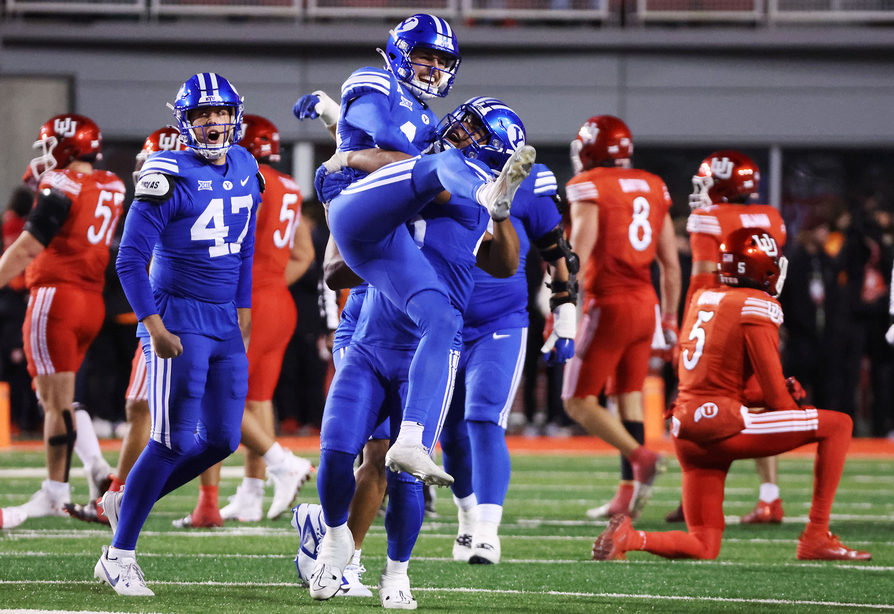

This BYU football team is undervalued on the national stage. From the days of Lavell Edwards, BYU has been a team to reckon with. Under the leadership of Kalani Sitake, the BYU Cougars have finally begun to be given some publicity that they have been deserving. In the time of Coach Sitake, the Cougars have been admitted to the Big 12 Conference, one of the Power 4 Conferences in the nation. They Coach Sitake has a record of 83-45, and in the last 2 years 18-4. Although, it cannot all be attributed to Coach Kalani. Recruitment at BYU has always been good, but in past couple seasons with NIL payments, BYU has built quite a good team. This year, there are 18 seniors graduating and 4 underclassmen who could enter the NFL draft.
There are many game-day traditions that are beloved to BYU fans. It kicks it off with the Cougar Walk, where fans can line up to cheer on the players on their way into the stadium. Before and after this, is Cougar Canyon. This is set up on Cougar Road in front of the stadium and consists of games, food, and other fun tailgating activities. In the 3rd quarter break, the stadium does "turbulence." The stadium lights flash and Cosmo comes out and bangs a drum. Then, the turbulence song plays and the team doesn't take the time for a time-out, but they party on the field.
Chase Roberts: Famous One-Handed Catch

Carsen Ryan Running With An Open Field

Tanner Wall Interception Against Utah

Jack Kelly Sacking Stanford Quarterback

Will Ferrin With The Game-Winning FG Against Utah
